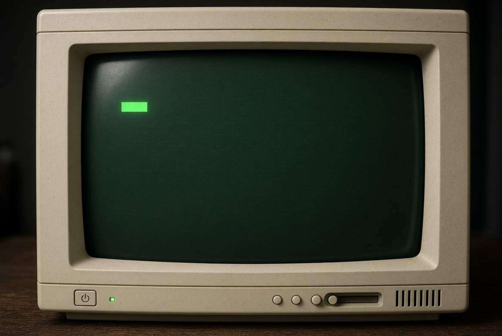

ERROR 404 // 0xVOID
[MEMORIA CANCELLATA DAL PROTOCOLLO OBLIVION / NODE ERASED]

> STATUS: 0xNULL -> 0xVOID -> 404_NOT_FOUND
> IT: Il nodo richiesto è stato inghiottito dall'oblio o non è mai esistito.
> EN: The requested network node has been erased by Oblivion.
> ACTION: Riconnettersi immediatamente al nodo sicuro 1984.
> IT: Il nodo richiesto è stato inghiottito dall'oblio o non è mai esistito.
> EN: The requested network node has been erased by Oblivion.
> ACTION: Riconnettersi immediatamente al nodo sicuro 1984.